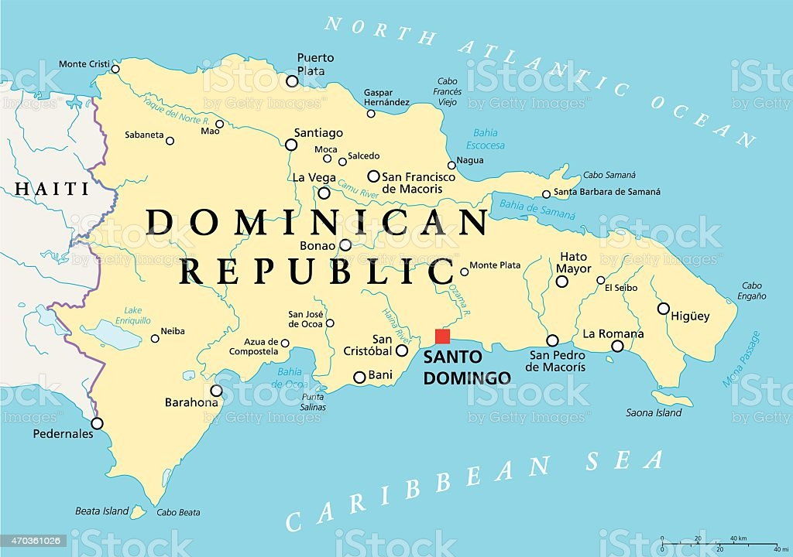

<h1>Dominican Republic</h1>
<app-buttom></app-buttom>
<p id=top></p>

<ol>
    <li><a href= "https://es.wikipedia.org/wiki/Distrito_Nacional">Distrito Nacional</a></li>
  
    <li><a href= "https://es.wikipedia.org/wiki/Azua">Azua</a></li>
  <ul>
    <li><a href= "https://es.wikipedia.org/wiki/Azua">Azua de Compostela</a></li>
    <li><a href= "https://es.wikipedia.org/wiki/Esteban%C3%ADa">Estebania</a></li>
    <li><a href= "https://es.wikipedia.org/wiki/Guayabal_(República_Dominicana)"> Guayabal</a></li>
    <li><a href= "https://es.wikipedia.org/wiki/Las_Charcas">Las Charcas</a></li>
    <li><a href= "https://es.wikipedia.org/wiki/Las_Yayas_de_Viajama">Las Yayas de Viajama</a></li>
    <li><a href= "https://es.wikipedia.org/wiki/Padre_Las_Casas_(República_Dominicana)">Padre Las Casas</a></li>
    <li><a href= "https://es.wikipedia.org/wiki/Peralta_(República_Dominicana)"> Peralta</a></li>
    <li><a href= "https://es.wikipedia.org/wiki/Pueblo_Viejo_(Azua)">Pueblo Viejo</a></li>
    <li><a href= "https://es.wikipedia.org/wiki/Sabana_Yegua">Sabana Yegua</a></li>
    <li><a href= "https://es.wikipedia.org/wiki/Tábara_Arriba">Tábara Arriba</a></li>
  </ul>

  <li><a href= "https://es.wikipedia.org/wiki/Provincia_de_Bahoruco"> Bahoruco</a></li>
  <ul>
    <li><a href= "https://es.wikipedia.org/wiki/Neiba">Neiba </a></li>
    <li><a href= "https://es.wikipedia.org/wiki/Galván_(República_Dominicana)"> Galvan</a></li>
    <li><a href= "https://es.wikipedia.org/wiki/Los_R%C3%ADos_(República_Dominicana)"> Los rios</a></li>
    <li><a href= "https://es.wikipedia.org/wiki/Tamayo_(República_Dominicana)"> Tamayo </a></li>
    <li><a href= "https://es.wikipedia.org/wiki/Villa_Jaragua">Villa Jaragua</a></li>
  </ul>

  <li><a href= "https://es.wikipedia.org/wiki/Provincia_de_Barahona"> Barahona </a></li>
  <ul>
    <li><a href= "https://es.wikipedia.org/wiki/Barahona_(República_Dominicana)">Barahona</a></li>
    <li><a href= "https://es.wikipedia.org/wiki/Cabral_(Barahona)"> Cabral </a></li>
    <li><a href= "https://es.wikipedia.org/wiki/El_Peñón_(República_Dominicana)">El Peñón</a></li>
    <li><a href= "https://es.wikipedia.org/wiki/Enriquillo_(República_Dominicana)"> Enriquillo</a></li>
    <li><a href= "https://es.wikipedia.org/wiki/Fundación_(República_Dominicana)"> Fundación </a></li>
    <li><a href= "https://es.wikipedia.org/wiki/Jaquimeyes"> Jaquimeyes</a></li>
    <li><a href= "https://es.wikipedia.org/wiki/La_Ciénaga_(Barahona)">La Ciénaga</a></li>
    <li><a href= "https://es.wikipedia.org/wiki/Las_Salinas_(Barahona)">Las Salinas</a></li>
    <li><a href= "https://es.wikipedia.org/wiki/Para%C3%ADso_(República_Dominicana)"> Paraíso </a></li>
    <li><a href= "https://es.wikipedia.org/wiki/Polo_(República_Dominicana)"> Polo</a></li>
    <li><a href= "https://es.wikipedia.org/wiki/Vicente_Noble_(municipio)">Vicente Noble</a></li>
  </ul>

  <li><a href= "https://es.wikipedia.org/wiki/Provincia_de_Dajabón">Dejabon</a></li>
  <ul>
    <li><a href= "https://es.wikipedia.org/wiki/Dajabón"> Dajabón</a></li>
    <li><a href= "https://es.wikipedia.org/wiki/El_Pino_(Dajabón)">El Pino</a></li>
    <li><a href= "https://es.wikipedia.org/wiki/Loma_de_Cabrera">Loma de Cabrera</a></li>
    <li><a href= "https://es.wikipedia.org/wiki/Partido_(República_Dominicana)"> Partido</a></li>
    <li><a href= "https://es.wikipedia.org/wiki/Restauración_(República_Dominicana)">Restauración</a></li>
  </ul>

  <li><a href= "https://es.wikipedia.org/wiki/Provincia_de_Duarte">Duarte</a></li>
  <ul>
    <li><a href= "https://es.wikipedia.org/wiki/San_Francisco_de_Macor%C3%ADs">San Francisco de Macorís</a></li>
    <li><a href= "https://es.wikipedia.org/wiki/Arenoso_(República_Dominicana)"> Arenoso </a></li>
    <li><a href= "https://es.wikipedia.org/wiki/Castillo_(Duarte)"> Castillo</a></li>
    <li><a href= "https://es.wikipedia.org/wiki/Eugenio_Mar%C3%ADa_de_Hostos_(municipio)">Eugenio María de Hostos</a></li>
    <li><a href= "https://es.wikipedia.org/wiki/Las_Guáranas">Las Guáranas</a></li>
    <li><a href= "https://es.wikipedia.org/wiki/Pimentel_(República_Dominicana)">Pimentel</a></li>
    <li><a href= "https://es.wikipedia.org/wiki/Villa_Riva">Villa Riva</a></li>
  </ul>

  <li><a href= "https://es.wikipedia.org/wiki/Provincia_de_El_Seibo">El seibo</a></li>
  <ul>
    <li><a href= "https://es.wikipedia.org/wiki/El_Seibo">El Seibo</a></li>
    <li><a href= "https://es.wikipedia.org/wiki/Miches">Miches</a></li>
  </ul>

  <li><a href= "https://es.wikipedia.org/wiki/Provincia_de_El%C3%ADas_Piña">Elias Pina</a></li>
  <ul>
    <li><a href= "https://es.wikipedia.org/wiki/Comendador_(municipio)"> Comendador</a></li>
    <li><a href= "https://es.wikipedia.org/wiki/Bánica">Bánica</a></li>
    <li><a href= "https://es.wikipedia.org/wiki/El_Llano_(El%C3%ADas_Piña)">El Llano</a></li>
    <li><a href= "https://es.wikipedia.org/wiki/Hondo_Valle">Hondo Valle</a></li>
    <li><a href= "https://es.wikipedia.org/wiki/Juan_Santiago_(El%C3%ADas_Piña)">Juan Santiago</a></li>
    <li><a href= "https://es.wikipedia.org/wiki/Pedro_Santana_(municipio)">Pedro Santana</a></li>
  </ul>

  <li><a href= "https://es.wikipedia.org/wiki/Provincia_de_Espaillat"> Espaillat</a></li>
  <ul>
    <li><a href= "https://es.wikipedia.org/wiki/Moca_(República_Dominicana)"> Moca</a></li>
    <li><a href= "https://es.wikipedia.org/wiki/Cayetano_Germosén">Cayetano Germosén</a></li>
    <li><a href= "https://es.wikipedia.org/wiki/Gaspar_Hernández">Gaspar Hernández</a></li>
    <li><a href= "https://es.wikipedia.org/wiki/Jamao_Al_Norte">Jamao al Norte</a></li>
  </ul>

  <li><a href= "https://es.wikipedia.org/wiki/Provincia_de_Hato_Mayor">Hato Mayor</a></li>
  <ul>
    <li><a href= "https://es.wikipedia.org/wiki/Hato_Mayor">Hato Mayor del Rey</a></li>
    <li><a href= "https://es.wikipedia.org/wiki/El_Valle_(Hato_Mayor)">El Valle</a></li>
    <li><a href= "https://es.wikipedia.org/wiki/Sabana_de_la_Mar">Sabana de la Mar</a></li>
  </ul>

  <li><a href= "https://es.wikipedia.org/wiki/Provincia_de_Hermanas_Mirabal">Hermanas Mirabal</a></li>
  <ul>
    <li><a href= "https://es.wikipedia.org/wiki/Salcedo_(República_Dominicana)"> Salcedo</a></li>
    <li><a href= "https://es.wikipedia.org/wiki/Tenares">Tenares</a></li>
    <li><a href= "https://es.wikipedia.org/wiki/Villa_Tapia"> Villa Tapia</a></li>
  </ul>

  <li><a href= "https://es.wikipedia.org/wiki/Provincia_de_Independencia"> Independencia </a></li>
  <ul>
    <li><a href= "https://es.wikipedia.org/wiki/Jiman%C3%AD"> Jimaní </a></li>
    <li><a href= "https://es.wikipedia.org/wiki/Cristóbal_(República_Dominicana)"> Cristóbal </a></li>
    <li><a href= "https://es.wikipedia.org/wiki/Duvergé"> Duvergé </a></li>
    <li><a href= "https://es.wikipedia.org/wiki/La_Descubierta">La Descubierta</a></li>
    <li><a href= "https://es.wikipedia.org/wiki/Mella_(Independencia)"> Mella</a></li>
    <li><a href= "https://es.wikipedia.org/wiki/Postrer_R%C3%ADo">Postrer Río</a></li>
  </ul>

  <li><a href= "https://es.wikipedia.org/wiki/Provincia_de_La_Altagracia"> La Altagracia</a></li>
  <ul>
    <li><a href= "https://es.wikipedia.org/wiki/Higüey"> Higüey</a></li>
    <li><a href= "https://es.wikipedia.org/wiki/San_Rafael_del_Yuma"> San Rafael del Yuma </a></li>
  </ul>

  <li><a href= "https://es.wikipedia.org/wiki/Provincia_de_La_Romana"> La Romana</a></li>
  <ul>
    <li><a href= "https://es.wikipedia.org/wiki/La_Romana_(municipio)"> La Romana</a></li>
    <li><a href= "https://es.wikipedia.org/wiki/Guaymate"> Guaymate </a></li>
    <li><a href= "https://es.wikipedia.org/wiki/Villa_Hermosa_(La_Romana)"> Villa Hermosa</a></li>
  </ul>

  <li><a href= "https://es.wikipedia.org/wiki/Provincia_de_La_Vega">La Vega</a></li>
  <ul>
    <li><a href= "https://es.wikipedia.org/wiki/La_Vega_(República_Dominicana)">La Concepción de La Vega</a></li>
    <li><a href= "https://es.wikipedia.org/wiki/Constanza_(República_Dominicana)"> Constanza </a></li>
    <li><a href= "https://es.wikipedia.org/wiki/Jarabacoa"> Jarabacoa</a></li>
    <li><a href= "https://es.wikipedia.org/wiki/Jima_Abajo">Jima Abajo</a></li>
  </ul>

  <li><a href= "https://es.wikipedia.org/wiki/Provincia_de_Mar%C3%ADa_Trinidad_Sánchez">María Trinidad Sánchez</a></li>
  <ul>
    <li><a href= "https://es.wikipedia.org/wiki/Nagua">Nagua </a></li>
    <li><a href= "https://es.wikipedia.org/wiki/Cabrera_(República_Dominicana)"> Cabrera</a></li>
    <li><a href= "https://es.wikipedia.org/wiki/El_Factor">El Factor</a></li>
    <li><a href= "https://es.wikipedia.org/wiki/R%C3%ADo_San_Juan_(municipio)">Río San Juan</a></li>
  </ul>

  <li><a href= "https://es.wikipedia.org/wiki/Provincia_de_Monseñor_Nouel">Monseñor Nouel</a></li>
  <ul>
    <li><a href= "https://es.wikipedia.org/wiki/Bonao"> Bonao </a></li>
    <li><a href= "https://es.wikipedia.org/wiki/Maimón"> Maimón</a></li>
    <li><a href= "https://es.wikipedia.org/wiki/Piedra_Blanca">Piedra Blanca</a></li>
  </ul>

  <li><a href= "https://es.wikipedia.org/wiki/Provincia_de_Monte_Cristi"> Montecristi</a></li>
  <ul>
    <li><a href= "https://es.wikipedia.org/wiki/Monte_Cristi_(República_Dominicana)"> Montecristi</a></li>
    <li><a href= "https://es.wikipedia.org/wiki/Castañuelas_(República_Dominicana)"> Castañuela</a></li>
    <li><a href= "https://es.wikipedia.org/wiki/Guayub%C3%ADn"> Guayubín</a></li>
    <li><a href= "https://es.wikipedia.org/wiki/Las_Matas_de_Santa_Cruz">Las Matas de Santa Cruz</a></li>
    <li><a href= "https://es.wikipedia.org/wiki/Pepillo_Salcedo">Pepillo Salcedo</a></li>
    <li><a href= "https://es.wikipedia.org/wiki/Villa_Vásquez">Villa Vásquez</a></li>
  </ul>

  <li><a href= "https://es.wikipedia.org/wiki/Provincia_de_Monte_Plata"> Monte Plata</a></li>
  <ul>
    <li><a href= "https://es.wikipedia.org/wiki/Monte_Plata"> Monte Plata</a></li>
    <li><a href= "https://es.wikipedia.org/wiki/Bayaguana"> Bayaguana</a></li>
    <li><a href= "https://es.wikipedia.org/wiki/Peralvillo"> Peralvillo</a></li>
    <li><a href= "https://es.wikipedia.org/wiki/Sabana_Grande_de_Boyá">Sabana Grande de Boyá</a></li>
    <li><a href= "https://es.wikipedia.org/wiki/Yamasá"> Yamasá </a></li>
  </ul>

  <li><a href= "https://es.wikipedia.org/wiki/Provincia_de_Pedernales"> Pedernales</a></li>
  <ul>
    <li><a href= "https://es.wikipedia.org/wiki/Pedernales_(República_Dominicana)"> Pedernales</a></li>
    <li><a href= "https://es.wikipedia.org/wiki/Oviedo_(República_Dominicana)"> Oviedo</a></li>
  </ul>

  <li><a href= "https://es.wikipedia.org/wiki/Provincia_de_Peravia"> Peravia</a></li>
  <ul>
    <li><a href= "https://es.wikipedia.org/wiki/Ban%C3%AD"> Baní</a></li>
    <li><a href= "https://es.wikipedia.org/wiki/Nizao"> Nizao</a></li>
  </ul>

  <li><a href= "https://es.wikipedia.org/wiki/Provincia_de_Puerto_Plata"> Puerto Plata</a></li>
  <ul>
    <li><a href= "https://es.wikipedia.org/wiki/Puerto_Plata"> Puerto Plata</a></li>
    <li><a href= "https://es.wikipedia.org/wiki/Altamira_(República_Dominicana)">Altamira</a></li>
    <li><a href= "https://es.wikipedia.org/wiki/Guananico"> Guananico</a></li>
    <li><a href= "https://es.wikipedia.org/wiki/Imbert_(República_Dominicana)"> Imbert</a></li>
    <li><a href= "https://es.wikipedia.org/wiki/Los_Hidalgos">Los Hidalgos</a></li>
    <li><a href= "https://es.wikipedia.org/wiki/Luperón_(República_Dominicana)"> Luperón </a></li>
    <li><a href= "https://es.wikipedia.org/wiki/Sosúa"> Sosúa </a></li>
    <li><a href= "https://es.wikipedia.org/wiki/La_Isabela"> Villa Isabela</a></li>
    <li><a href= "https://es.wikipedia.org/wiki/Villa_Montellano"> Villa Montellano</a></li>
  </ul>

  <li><a href= "https://es.wikipedia.org/wiki/Provincia_de_Samaná"> Samaná </a></li>
  <ul>
    <li><a href= "https://es.wikipedia.org/wiki/Samaná"> Samaná</a></li>
    <li><a href= "https://es.wikipedia.org/wiki/Las_Terrenas">Las Terrenas</a></li>
    <li><a href= "https://es.wikipedia.org/wiki/Sánchez_(municipio)"> Sánchez </a></li>
  </ul>

  <li><a href= "https://es.wikipedia.org/wiki/Provincia_de_San_Cristóbal">San Cristóbal</a></li>
  <ul>
    <li><a href= "https://es.wikipedia.org/wiki/San_Cristóbal_(República_Dominicana)"> San Cristóbal</a></li>
    <li><a href= "https://es.wikipedia.org/wiki/Bajos_de_Haina"> Bajos de Haina</a></li>
    <li><a href= "https://es.wikipedia.org/wiki/Cambita_Garabitos">Cambita Garabitos</a></li>
    <li><a href= "https://es.wikipedia.org/wiki/Los_Cacaos">Los Cacaos</a></li>
    <li><a href= "https://es.wikipedia.org/wiki/Sabana_Grande_de_Palenque">Sabana Grande de Palenque</a></li>
    <li><a href= "https://es.wikipedia.org/wiki/San_Gregorio_de_Nigua">San Gregorio de Nigua</a></li>
    <li><a href= "https://es.wikipedia.org/wiki/Villa_Altagracia">Villa Altagracia</a></li>
    <li><a href= "https://es.wikipedia.org/wiki/Yaguate"> Yaguate</a></li>
  </ul>

  <li><a href= "https://es.wikipedia.org/wiki/Provincia_de_San_José_de_Ocoa">San José de Ocoa</a></li>
  <ul>
    <li><a href= "https://es.wikipedia.org/wiki/San_José_de_Ocoa">San José de Ocoa</a></li>
    <li><a href= "https://es.wikipedia.org/wiki/Rancho_Arriba">Rancho Arriba</a></li>
    <li><a href= "https://es.wikipedia.org/wiki/Sabana_Larga">Sabana Larga</a></li>
  </ul>

  <li><a href= "https://es.wikipedia.org/wiki/Provincia_de_San_Juan_(República_Dominicana)">San Juan</a></li>
  <ul>
    <li><a href= "https://es.wikipedia.org/wiki/San_Juan_(República_Dominicana)">San Juan de la Maguana</a></li>
    <li><a href= "https://es.wikipedia.org/wiki/Bohech%C3%ADo_(municipio)"> Bohechío </a></li>
    <li><a href= "https://es.wikipedia.org/wiki/El_Cercado">El Cercado</a></li>
    <li><a href= "https://es.wikipedia.org/wiki/Juan_de_Herrera_(República_Dominicana)">Juan de Herrera</a></li>
    <li><a href= "https://es.wikipedia.org/wiki/Las_Matas_de_Farfán">Las Matas de Farfán</a></li>
    <li><a href= "https://es.wikipedia.org/wiki/Vallejuelo_(San_Juan)"> Vallejuelo</a></li>
  </ul>

  <li><a href= "https://es.wikipedia.org/wiki/Provincia_de_San_Pedro_de_Macor%C3%ADs">San Pedro de Macorís</a></li>
  <ul>
    <li><a href= "https://es.wikipedia.org/wiki/San_Pedro_de_Macor%C3%ADs">San Pedro de Macorís</a></li>
    <li><a href= "https://es.wikipedia.org/wiki/Consuelo_(República_Dominicana)"> Consuelo</a></li>
    <li><a href= "https://es.wikipedia.org/wiki/Guayacanes_(República_Dominicana)"> Guayacanes</a></li>
    <li><a href= "https://es.wikipedia.org/wiki/Quisqueya_(municipio)"> Quisqueya </a></li>
    <li><a href= "https://es.wikipedia.org/wiki/Ramón_Santana_(municipio)">Ramón Santana</a></li>
    <li><a href= "https://es.wikipedia.org/wiki/Los_Llanos_(República_Dominicana)">San José de Los Llanos</a></li>
  </ul>

  
  <li><a href= "https://es.wikipedia.org/wiki/Provincia_de_Sánchez_Ram%C3%ADrez">Sánchez Ramírez</a></li>
  <ul>
    <li><a href= "https://es.wikipedia.org/wiki/Cotu%C3%AD"> Cotuí</a></li>
    <li><a href= "https://es.wikipedia.org/wiki/Cevicos">Cevicos</a></li>
    <li><a href= "https://es.wikipedia.org/wiki/Fantino_(República_Dominicana)"> Fantino</a></li>
    <li><a href= "https://es.wikipedia.org/wiki/La_Mata_(República_Dominicana)">La Mata</a></li>
  </ul>

  <li><a href= "https://es.wikipedia.org/wiki/Provincia_de_Santiago_(República_Dominicana)"> Santiago</a></li>
  <ul>
    <li><a href= "https://es.wikipedia.org/wiki/Santiago_(República_Dominicana)"> Santiago </a></li>
    <li><a href= "https://es.wikipedia.org/wiki/Bisonó"> Bisonó </a></li>
    <li><a href= "https://es.wikipedia.org/wiki/Jánico"> Janico</a></li>
    <li><a href= "https://es.wikipedia.org/wiki/Licey_al_Medio">Licey al Medio</a></li>
    <li><a href= "https://es.wikipedia.org/wiki/Puñal_(municipio)"> Puñal</a></li>
    <li><a href= "https://es.wikipedia.org/wiki/Sabana_Iglesia">Sabana Iglesia</a></li>
    <li><a href= "https://es.wikipedia.org/wiki/San_José_de_las_Matas">San José de las Matas</a></li>
    <li><a href= "https://es.wikipedia.org/wiki/Tamboril_(República_Dominicana)"> Tamboril</a></li>
    <li><a href= "https://es.wikipedia.org/wiki/Villa_González">Villa González</a></li>
  </ul>

  <li><a href= "https://es.wikipedia.org/wiki/Provincia_de_Santiago_Rodr%C3%ADguez">Santiago Rodríguez</a></li>
  <ul>
    <li><a href= "https://es.wikipedia.org/wiki/San_Ignacio_de_Sabaneta">San Ignacio de Sabaneta</a></li>
    <li><a href= "https://es.wikipedia.org/wiki/Villa_Los_Almácigos">Los Almácigos</a></li>
    <li><a href= "https://es.wikipedia.org/wiki/Monción"> Monción</a></li>
  </ul>

  <li><a href= "https://es.wikipedia.org/wiki/Provincia_de_Santo_Domingo">Santo Domingo</a></li>
  <ul>
    <li><a href= "https://es.wikipedia.org/wiki/Santo_Domingo_Este">Santo Domingo Este</a></li>
    <li><a href= "https://es.wikipedia.org/wiki/Boca_Chica">Boca Chica</a></li>
    <li><a href= "https://es.wikipedia.org/wiki/Los_Alcarrizos">Los Alcarrizos</a></li>
    <li><a href= "https://es.wikipedia.org/wiki/Pedro_Brand">Pedro Brand</a></li>
    <li><a href= "https://es.wikipedia.org/wiki/San_Antonio_de_Guerra">San Antonio de Guerra</a></li>
    <li><a href= "https://es.wikipedia.org/wiki/Santo_Domingo_Norte">Santo Domingo Norte</a></li>
    <li><a href= "https://es.wikipedia.org/wiki/Santo_Domingo_Oeste">Santo Domingo Oeste</a></li>
  </ul>

  <li><a href= "https://es.wikipedia.org/wiki/Provincia_de_Valverde"> Valverde </a></li>
  <ul>
    <li><a href= "https://es.wikipedia.org/wiki/Mao_(República_Dominicana)"> Mao</a></li>
    <li><a href= "https://es.wikipedia.org/wiki/Esperanza_(República_Dominicana)"> Esperanza</a></li>
    <li><a href= "https://es.wikipedia.org/wiki/Laguna_Salada">Laguna Salada</a></li>
  </ul>

  <p id=bottom></p>

</ol> 

<app-top></app-top>

